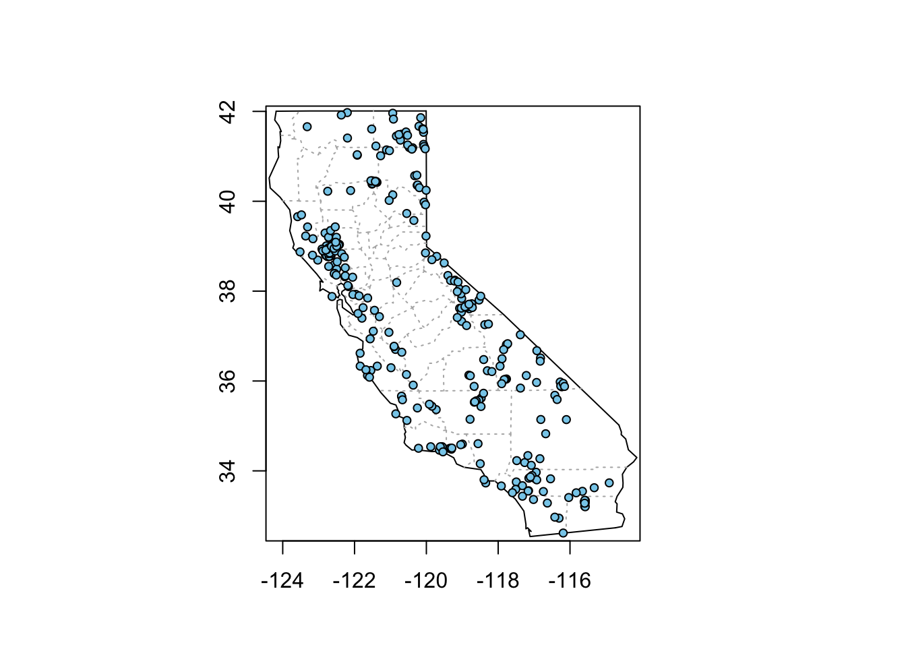
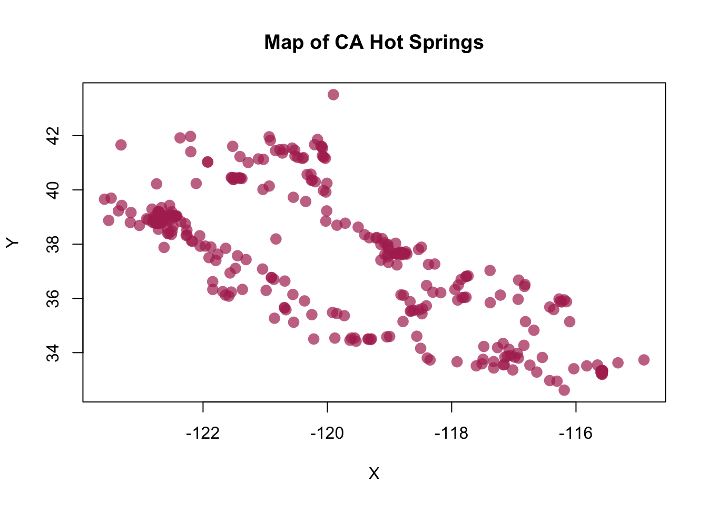

Point Data with rgdal and sf
There are loads of spatial mapping/plotting packages in R. The main two ways to read in spatial data use the rgdal package, and the sf package. I’m going to show how you can load and plot XY data using either method.
Let’s load packages first:
suppressPackageStartupMessages({
library(rgdal); # spatial/shp reading
library(readr); # reading/writing files
library(dplyr); # wrangling data/plotting
library(viridis); # nice color palette
library(sf); # newer "simple features" spatial package
library(rvest) # scraping web data
library(maps); # for map functions
library(maptools) # map data
}) Get XY Data: CA Hotsprings
The simplest type of data to plot is X/Y points. You might have a .csv lying around with site locations, or even better, a shapefile. For this example, let’s use this list of CA hotsprings. It provides names, Latitude & Longitude and water temperatures in C and F for each hotspring. I’ve already downloaded the file so you can just read the file link directly into R as follows:
## Parsed with column specification:
## cols(
## X1 = col_character(),
## X2 = col_double(),
## X3 = col_double(),
## X4 = col_character(),
## X5 = col_character(),
## X6 = col_character(),
## X7 = col_character(),
## X8 = col_character()
## )Optional: WebScraping the Table
If you’re interested in more info on web scraping, definitely check out some of the DSI material from Duncan (here and here). I’m going to use a method I demonstrated in a blog I wrote a few weeks ago (check it out here) which shows how to use a package called rvest to pretty quickly and easily grab data from any part of a webpage. Let’s see how it works.
- First we need to go the webpage, and then right click and select Inspect. I’m using Chrome as my browser here.
- Then in the upper right hand box, hover/scroll around until the table part of the webpage is highlighted. Right click on that line and select “Copy > Copy Xpath”.
- Read in with the code below!
library(rvest)
url <- "http://www.hotspringsenthusiast.com/California.asp"
df <- url %>%
read_html() %>%
## NOW THE XPATH WE COPIED!
html_nodes(xpath='/html/body/table') %>% # use inspect and xpath with chrome
html_table()
df_locs <- df[[1]] # reads in as a list, so we are just eliminating the list and making this a dataframe
# Great! Let's add colnames and clean up a bit:
dim(df_locs)
# set_names from purrr package is nice for adding col names
df_locs <- df_locs %>% set_names(nm = c("State", "Lat", "Lon", "Spring_Name", "Temp_C", "Temp_F", "Area", "USGS_Quad"))
# Make the temp data numeric
df_locs <- df_locs %>% mutate_at(.vars = c("Temp_C", "Temp_F"), .funs = as.numeric)
# save as a CSV!
# write_csv(df_locs, path = "data/hotsprings_CA.csv")
Make XY “Spatial”: rgdal
Now we have some data, let’s show how to read it in as spatial data using the rgdal pipeline. This requires creating a SpatialPointsDataFrame. We’ll use the extension sp for data of this type.
# read in data
df_locs <- read_csv("https://raw.githubusercontent.com/ryanpeek/mapping_in_R/master/data/hotsprings_CA.csv") # or as file: data/hotsprings_CA.csv
# rename
df_locs <- df_locs %>% set_names(nm = c("State", "Lat", "Lon", "Spring_Name", "Temp_C", "Temp_F", "Area", "USGS_Quad"))
# Make the temp data numeric
df_locs <- df_locs %>% mutate_at(.vars = c("Temp_C", "Temp_F"), .funs = as.numeric)
head(df_locs) # wait...what's up with Lon?## # A tibble: 6 x 8
## State Lat Lon Spring_Name Temp_C Temp_F Area USGS_Quad
## <chr> <dbl> <dbl> <chr> <dbl> <dbl> <chr> <chr>
## 1 CA 38.8 123. "THE \r\n GEY… 214. 101. SANTA … THE GEYSERS…
## 2 CA 38.8 123. "LITTLE \r\n … 210. 99. SANTA … (WHISPERING…
## 3 CA 41.5 120. "HOT \r\n SPR… 208. 98. ALTURAS CEDARVILLE …
## 4 CA 36.0 118. "COSO \r\n HO… 207. 97. DEATH … HAIWEE RESE…
## 5 CA 41.7 120. "LAKE \r\n CI… 207. 97. ALTURAS CEDARVILLE …
## 6 CA 36.0 118. "DEVILS \r\n … 207. 97. DEATH … HAIWEE RESE…A note on Lat/Longs
For data from the North American continent, keep an eye on your lat/longs. A common snafu that can occur is the longitude may remain positive, which will plot your point somewhere in the Indian Ocean. Make sure all your longitudes are negative (if in the US and using lat/longs).
Here we need to fix this column, and then make our data “spatial” with the SpatialPointsDataFrame() function. Note we also set the projection based for our data.
df_locs$Lon <- df_locs$Lon * -1
# make spatial Dataframe object:
df_locs_sp <- SpatialPointsDataFrame(df_locs[,c(3,2)],df_locs[,-c(3,2)])
# no projection:
proj4string(df_locs_sp) # NA## [1] NA# set projections
utms <- CRS("+init=epsg:32610") ## more detailed def using the EPSG code
utms # more detail## CRS arguments:
## +init=epsg:32610 +proj=utm +zone=10 +datum=WGS84 +units=m +no_defs
## +ellps=WGS84 +towgs84=0,0,0## CRS arguments:
## +init=epsg:4326 +proj=longlat +datum=WGS84 +no_defs +ellps=WGS84
## +towgs84=0,0,0## [1] "+init=epsg:4326 +proj=longlat +datum=WGS84 +no_defs +ellps=WGS84 +towgs84=0,0,0"# if you want to reproject (say to UTM):
df_locs_sp_utm<-spTransform(df_locs_sp, utms)
proj4string(df_locs_sp_utm) # double check data to make sure it has CRS## [1] "+init=epsg:32610 +proj=utm +zone=10 +datum=WGS84 +units=m +no_defs +ellps=WGS84 +towgs84=0,0,0"Make XY “Spatial”: sf
Great, now let’s see how to do the same thing using the sf package. Notice the amount of code we wrote above…and below.
# make data sf object:
df_locs_sf <- st_as_sf(df_locs,
# coords = c("Lon", "Lat"), # can use numbers here too
coords = c(3, 2), # can use numbers here too
remove = F, # don't remove these lat/lon cols from df
crs = 4326) # add projection (this is WGS84)That’s it! We’re done!
Ok! So we’ve pulled in a list of XY locations. These could have come from field work, a GPS device, whatever. We projected this dataset into WGS84 which is fairly universal (and easily plotted in things like googlemaps, leaflet, Google Earth, etc.). On to plotting.
Plotting XY Data
Let’s plot the data. I’ll show how to do the same map using both sf and rgdal. Let’s introduce map and maptools packages, which provide some nice functionality.
Plotting with Spatial (rgdal) Data
# need to have maps and maptools loaded here
library(maps)
library(maptools)
# add States
map("state",region=c('CA')) # get a CA map
map.axes() # add axes
# add counties
map("county",region=c('CA'),boundary=FALSE, lty=3, add=T, col="gray70")
# add our hotspring point data from earlier: sp version
points(df_locs_sp, cex=0.8, pch=21, bg="skyblue")
# Cool! Let's zoom in a bit and add a legend
map("state",region=c('CA'), xlim = c(-121,-119.2), ylim=c(38,40))
map.axes()
map("county",region=c('CA'),boundary=FALSE, lty=3, add=T, col="gray70",
xlim = c(-121,-119.2), ylim=c(38,40))
points(df_locs_sp, cex=0.8, pch=21, bg="skyblue")
# add labels (using trial and error for placement)
text(df_locs_sp, labels=as.character(df_locs_sp@data$Spring_Name), col="gray20",
cex=0.6, font=2, offset=0.5, adj=c(0,2))
# add a plot legend
legend("topright", border = "gray80", box.lwd = 1.5,
box.col = "gray80",
legend=c("Hot Springs", "Counties"),
title="Study Map", bty="o", inset=0.05,
lty=c(-1,3), pch=c(21, NA), cex=0.8,
col=c("black", "gray70"), pt.bg=c("skyblue", NA))Plotting with sf Data
Can we do the same thing with sf data? Nope! Not in the same way. You’ll get this error:
Error in data.matrix(x) :
(list) object cannot be coerced to type 'double'Baseplotting functions work with sf, but be aware, using plot will default to plotting a facet or map for every column of data in your dataframe. Avoid that by specifying st_coordinates().
# the simplest plot with sf data:
plot(df_locs_sf, pch=16, col=adjustcolor("maroon", alpha=0.7), cex=1.5) #YIKES# this is better
plot(st_coordinates(df_locs_sf), pch=16, col=adjustcolor("maroon", alpha=0.7), cex=1.5)
graphics::title("Map of CA Hot Springs")
Plotting with ggplot and ggmap
Alternatively, we can use ggplot2 instead. This is where sf objects are really nice. They fit well within the ggplot framework because they are simply dataframes with a spatial list-column. You can plot XY data as a regular layer, or you can use the geom_sf function.
The only caveat here is we currently (as of 2018-03-05) need the development version of ggplot2. To install, use:
Once we have the dev version of ggplot2, we can make a fancier plot.
# fancier ggplot w google background plot:
library(ggplot2)
library(ggmap) # need this package
location=c(-119.7,38.7) # set the center of the map
# set the background map up
map1 <- get_map(location=location, crop = F,
color="bw",
maptype="satellite",
source="google",
zoom=8)## Map from URL : http://maps.googleapis.com/maps/api/staticmap?center=38.7,-119.7&zoom=8&size=640x640&scale=2&maptype=satellite&language=en-EN&sensor=falsesitemap <- ggmap(map1) # start a ggmap... like calling ggplot()
# and let's make our nicemap
nicemap<-
sitemap +
geom_point(data=df_locs_sf, aes(x=Lon, y=Lat, fill=Temp_F), pch=21, alpha=0.7, size=4)+
scale_fill_viridis_c(option = "A")+
labs(x="Longitude (WGS84)", y="Latitude",
title="Hot Springs in California") +
theme_bw(base_family = "Roboto Condensed") # change this to sans if it doesn't plot
nicemap## Warning: Removed 255 rows containing missing values (geom_point).